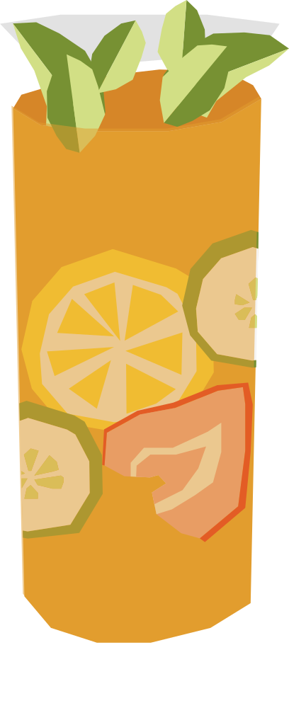

¿Unas ostras en Londres?
Creado en 1840 por James Pimm, dueño de un bar de ostras en la City de Londres, como digestivo casero. Con el tiempo se convirtió en símbolo del verano británico, siendo la bebida oficial de Wimbledon.
RECETA
- 50 ml Pimm’s No. 1
- 150 ml ginger ale o limonada
- 2 rodajas de pepino
- 1 rodaja de naranja
- 1 fresa
- 2–3 hojas de mentao
- Hielo en cubos
- Llena el vaso con hielo.
- Agrega el Pimm’s y las frutas, pepino y menta.
- Completa con ginger ale o lemonade y mezcla suavemente.
- Decorar con pepino, naranja, fresa y hojas de menta.
Vaso: Vaso alto o jarra